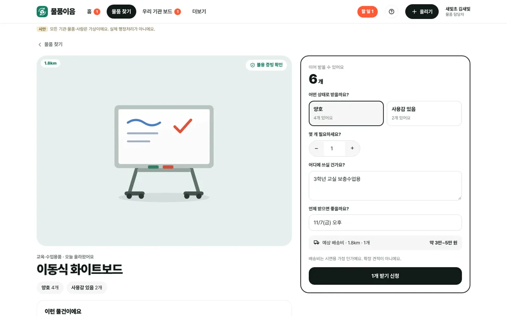
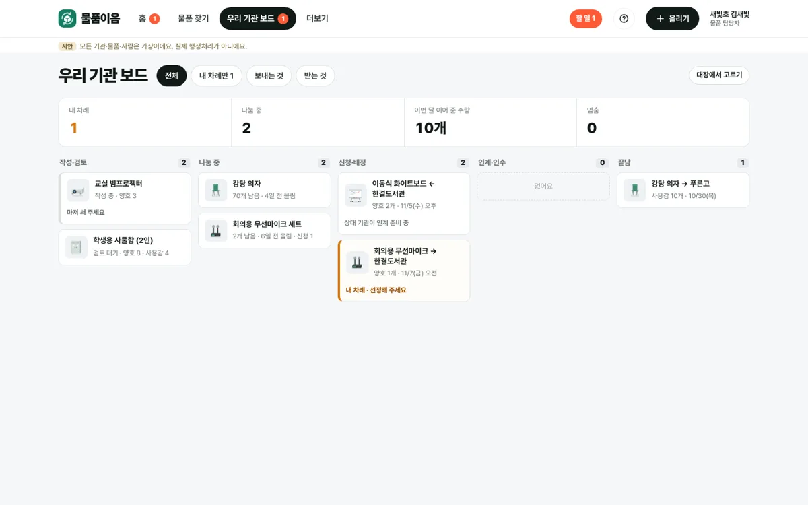
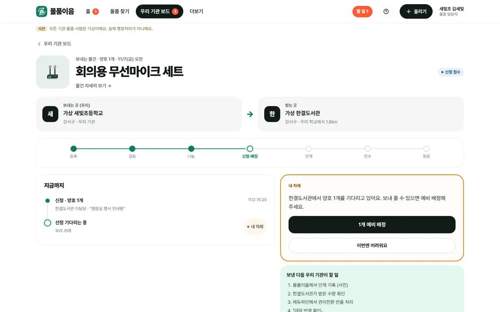
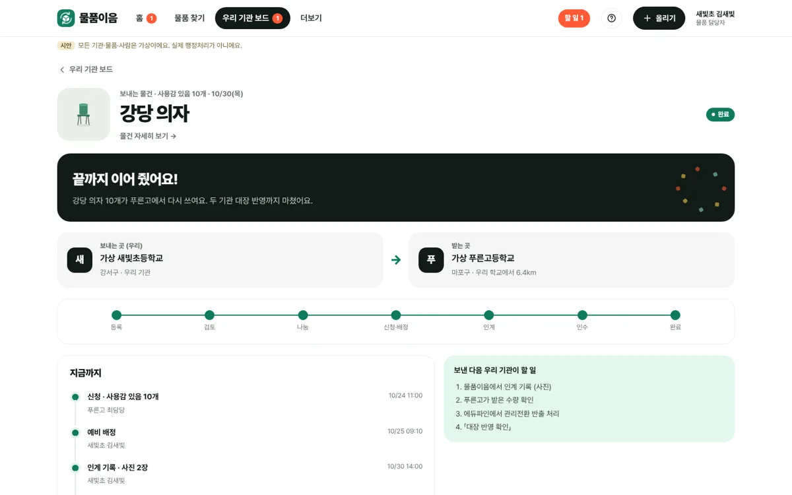
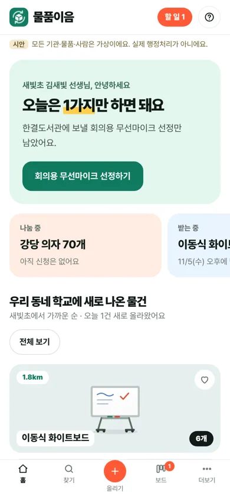
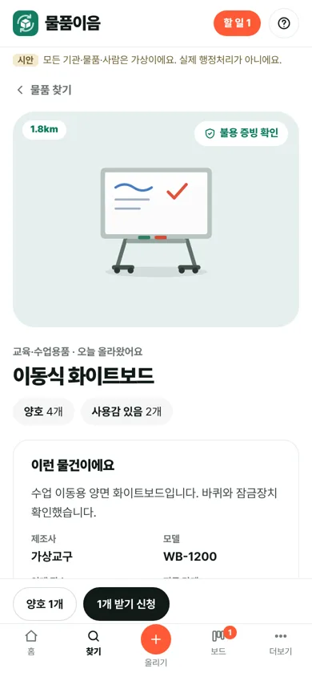
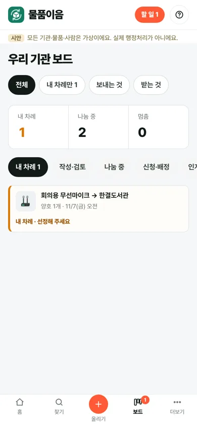
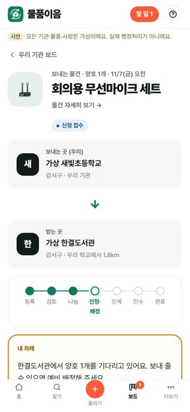

할 일이 보이지 않아요
로그인하면 물품 찾기로 갑니다. 내가 승인할 검토, 인계할 물건, 멈춘 수량 불일치는 메뉴마다 들어가 봐야 압니다.
「우리 기관 업무」 숫자판은 건수만, 누가 무엇을 할지는 없음
지금 물품이음은 기능은 거의 다 있지만, 메뉴 10개를 오가며 「그래서 오늘 뭘 해야 하지?」를 스스로 찾아야 합니다. 이 개선안은 서버 규칙·권한·증빙 조건은 그대로 두고, 화면 구조와 겉모습과 말투를 다시 짭니다.
로그인하면 물품 찾기로 갑니다. 내가 승인할 검토, 인계할 물건, 멈춘 수량 불일치는 메뉴마다 들어가 봐야 압니다.
「우리 기관 업무」 숫자판은 건수만, 누가 무엇을 할지는 없음
매일 쓰는 3개와 가끔 쓰는 도우미 4개가 한 줄에 있고, 「물품 올리기」는 세 군데에 있습니다.
v0.6에서 부서별 재고·업로드 이력·개선사항이 더해져 13개
물품 상태 5개와 신청 상태 8개가 배지로만 보입니다. 다음에 누가 무엇을 하는지 한눈에 안 보입니다.
상태값 13개, 진행 표시 없음
사진 등록은 「물품 올리기」, 대장으로 올리기는 「대장 가져오기」에 있습니다. 올리기 화면은 긴 한 장짜리 양식입니다.
엑셀 업로드가 두 화면에 중복
카드 사진이 작고 정보가 적어, 상세에 들어가야 거리·등록일·증빙 확인을 압니다. 「물건 나눔」 서비스인데 물건이 주인공이 아닙니다.
사진 비율·크기 제각각, 카드에 자치구·등록일 없음
에듀파인·온비드·배송비·AI 도우미가 따로 메뉴라, 정작 필요한 순간(인계 직후, 신청할 때)에는 화면에 없습니다.
도우미 4개 모두 독립 메뉴
같은 화면을 「물건이 주인공 · 업무 보드 · 따뜻한 학교」 세 방향으로 그려 비교했습니다(방향 비교). 한 방향만 고르면 각자 약점이 커서, 화면의 역할에 맞게 나눠 썼습니다.
큰 사진 칸, 사진 위에 거리와 남은 수량, 검정 굵은 제목. 결선 심사에서 가장 먼저 보이는 곳이라 「물건 나눔」이 한눈에 보여야 합니다.
우리 물건과 주고받기를 단계별 칸에. 내 차례는 주황 띠. 매일 여러 건을 넘기는 담당자에게 가장 빠르고, 정식 운영으로 넘기기도 쉽습니다.
「오늘은 1가지만 하면 돼요」, 질문형 입력, 끝까지 마치면 축하. 디지털에 서툰 교직원도 겁먹지 않게 합니다.
| 지금 메뉴 | 개선 후 | 이유 |
|---|---|---|
| (없음) | 홈 · 오늘 할 일 + 새로 나온 물건 | 들어오자마자 내 차례와 이웃 물건부터 |
| 물품 찾기 | 물품 찾기 | 사진 먼저, 가까운 순 |
| 우리 기관 업무 · 신청·인계내역 | 우리 기관 보드 (단계별 칸, 내 차례만 보기) | 우리 물건과 주고받기가 같은 흐름이라 한 곳에서 |
| 부서별 재고 · 업로드 이력 | 보드 안의 탭 (제안) | 매일 쓰지 않는 관리 화면 |
| 물품 올리기 · 대장 가져오기 | 머리줄 「＋ 올리기」 버튼 하나 · 입구 3개(사진·에듀파인 엑셀·대장) | 입구는 셋이어도 다음 단계는 같음 |
| 에듀파인 도우미 · 온비드 준비 · 배송비 예상 | 필요한 단계 화면 안 안내 칸 | 인계 직후 에듀파인, 신청할 때 배송비, 끝난 물건에 온비드 |
| AI 업무도우미 | 모든 화면 오른쪽 위 「?」 | 화면마다 맞는 질문과 근거 |
| 개선사항 · 연결·설정 | 더보기 | 가끔 쓰는 곳 |
휴대폰은 아래 탭 5개(홈 · 찾기 · ＋올리기 · 보드 · 더보기). 기존 주소(#/work, #/requests 등)는 새 위치로 넘겨 북마크와 테스트가 깨지지 않게 합니다.
| 표시 | 뜻 | 다음에 할 사람 |
|---|---|---|
| 작성 중 | 비공개 초안, 우리 기관만 봄 | 물품 담당자 |
| 검토 대기 | 게시 전 다른 검토자 확인 | 업무 검토자 (작성자 제외) |
| 나눔 중 | 다른 학교가 찾고 신청할 수 있음 | 받을 학교 |
| 신청·배정 · 인계·인수 | 주고받기 진행 중 | 단계마다 보내는 곳 ↔ 받는 곳 |
| 완료 | 양쪽 증빙과 대장 반영 확인 | 없음 · 축하 칸 |
| 수량 불일치 | 멈춤. 양쪽 확인 전 진행 안 됨 | 양쪽 담당자 |
| 끝남 | 중단·종료·미선정·취소 | 없음 |
「내 차례」는 주황(보드의 띠, 홈 숫자), 「멈춤」만 빨강, 「완료」만 진한 초록. 색만으로 구분하지 않게 점·글자를 함께 씁니다.
아래는 실제로 눌러 볼 수 있는 시안을 캡처한 것입니다. 물건 그림은 실제 사진이 오기 전까지 쓰는 그림입니다.
위는 말을 거는 인사 칸과 할 일 버튼, 가운데는 나눔·받는 중·이번 달 말풍선, 아래는 가까운 학교에 새로 나온 물건 사진.

큰 사진 칸 위에 거리와 남은 수량, 아래에 기관·등록일·증빙 확인·상태별 수량.

「어떤 상태로 받을까요? · 몇 개 필요하세요? · 어디에 쓰실 건가요?」. 주는 곳 학교 카드와 같은 학교의 다른 물건.

작성·검토 / 나눔 중 / 신청·배정 / 인계·인수 / 끝남. 「내 차례만 · 보내는 것 · 받는 것」으로 걸러 보기.

「한결도서관에서 양호 1개를 기다리고 있어요. 보내 줄 수 있으면 예비 배정해 주세요.」 끝까지 마치면 축하 칸.


위 단계 막대, 입구 3개, AI 제안은 파란 점선 칸에서 「넣기」를 눌러야 반영. 오른쪽은 그 단계에 필요한 안내.

아래 탭 가운데 주황 ＋. 상세는 신청 버튼을 아래에 고정, 주고받기는 지금 할 일을 기록보다 위에.




글자·주요 버튼#111a16
브랜드·나눔 중·완료#0f7a5f
할 일 숫자·＋올리기만#ff5a36
내 차례#d97706
멈춤만#c2341f
사진 칸 바탕 (분류별)파스텔 5색
인사 칸·안내 칸#e3f6ee
인사 34 / 900오늘은 1가지만 하면 돼요화면 제목 30 / 900무엇이 필요하세요?카드 제목 15 / 800이동식 화이트보드본문 15 / 400불용결정 결재 원문과 대상 목록을 확인했어요.보조 13 / 500한결도서관 · 강서구 · 오늘버튼·칩은 완전히 둥글게(pill), 사진 칸 20px, 큰 칸 24~28px. 그림자는 거의 쓰지 않고 바탕색 차이로 구분합니다. 행동 칸(받기 신청, 내 차례, 올리기)은 검정 2px 테두리로 「여기서 하세요」를 표시합니다.
법령·증빙·공식 처리를 말하는 문장은 다정하게 쓰되 뜻을 바꾸지 않습니다(예: 「작성자는 스스로 게시할 수 없어요」).
지금은 같은 화풍(빛·그늘 두 면 + 바닥 그림자)의 물건 그림 11종을 씁니다. 실제 서비스에서는 현물 사진이 들어갑니다. 사진 촬영 기준: 정면 한 장, 밝은 벽 앞, 4:5 세로, 이름표·학생 얼굴·문서 가림.
실제 앱에서 홈·찾기·보드가 v2로 보임
11/11 제출본
11/25 결선 시연
그대로 지키는 것 (AGENTS.md): 서버 검증·기관 격리·수량·증빙 조건은 바꾸지 않습니다. AI 제안은 「넣기」 전까지 기록되지 않고, 공식 대장 품명·번호·수량은 덮어쓰지 않습니다. 작성자 본인 게시 불가 규칙도 그대로입니다.
체크는 보는 사람 각자의 메모용이며 저장·공유되지 않습니다.